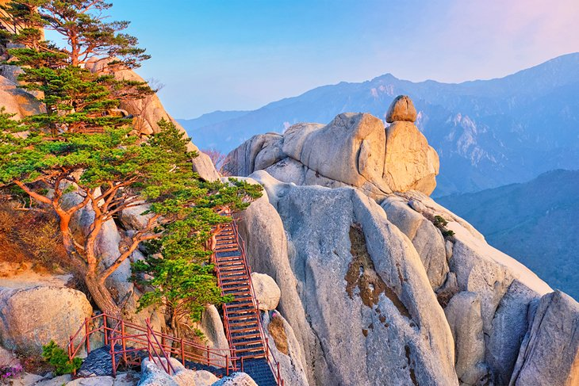

Baekjae Cultural Land
In this page, you will get to know why I love Baekjae Cultural Land.
Introduction
Called “The Baekje Historical Village,” the park features a live-scale reconstruction of what is called Sabi palace and will open its gate to the public at the start of the “Great Baekje World Festival” which runs from Sept. 18-Oct. 17. A massive undertaking on a 3.3 million square meter plot of land that cost a whopping 690 billion won ($579 million), the 12-year endeavor will finally wrap construction that will likely become South Chungcheong Province’s landmark. During a recent visit ahead of its official opening, the site was still undergoing last minute cosmetic work on various structures throughout the palace. Many say most of the lore that come from the Baekje period tend to be steeped in tragedy and pain and they’re not far off on that assessment. However, much of the cultural significance of that period goes largely unnoticed and this is what the South Chungcheong Provincial government’s tourism bureau has been trying hard to promote.
Location
The Baekje Historic Areas are a group of monuments located in three South Korean cities: Gongju, Buyeo, and Iksan. They relate to the last period of the Baekje Kingdom, representing the period from 475 to 660 CE, which was one of the three kingdoms that flourished from 18 BC to 660 AD. The property designated as a UNESCO World Heritage Site has eight archaeological sites. These are: The Gongsanseong fortress (공주 공산성) and the royal tombs at Songsan-ri, related to the capital city of Ungjin, now Gongju; the Busosanseong Fortress (부소산성) and Gwanbuk-ri administrative buildings, the Jeongnimsa Temple, the Neungsan-ri royal tombs, and the Naseong city wall in Sabi, now Buyeo; and the Wanggung-ri Palace and the Mireuksa Temple in Iksan, a subsidiary capital region of Sabi.
Photo Album
“Main Palace”
The main Sabi palace of the Baekje Historical Village has on its roof the 590 kilogram ornament called “chimi” which was excavated from the Mireuksa Temple. The same style of decorative “chimis” can be also found in traditional Japanese architecture.
“Baekjae Mural”
Mural on Nakhwa cliff depicting the legend of King Euija’s 3000 concubines falling to their deaths during the third Silla invasion of 660.
“Gongsanseong Fortress of Gongju”
Lotus Pond and Manharu Pavillion in Gongsan Fortess.
More sights in South Korea
"Seoul Tower"

"Seoraksan National Park"
"Gyeongbokgung Palace"

"Jeju Island"